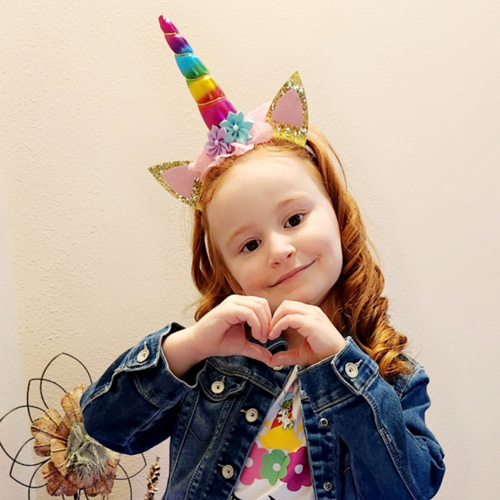
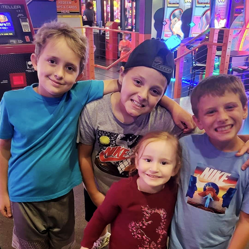

Family & Fun
My pride and joy is my daughter Aurora; she is my mini-me. We also live in a household made up of all girls. In addition to Aurora, we have two female cats, Olive and Pepper.
We spend a lot of quality time with my sister Jamie and her family, which includes her husband Jay, and their three sons: Luke, who is 12 years old, Max, who is 10, and the youngest, our playful "doggo" Chase. Family gatherings at our house are a common occurrence, filled with laughter and fun activities.
On the Competitive Side
One of our favorite activities is playing card games and dice together at the family table. It's a tradition that brings us closer, with each game night filled with friendly competition and shared memories. We all gather around, shuffling cards, rolling dice, and enjoying each other's company. The boys love the thrill of winning, while we all appreciate the time spent together, away from screens and distractions.
The Job: Pristene
"We believe that the health of your eyes deserves the finest care. That's why every Pristene product we offer is not just a supplement, but a testament to our uncompromising standards of quality. Pristene products are certified to the highest standards for dietary supplements."
Popular Products
High Definition
Neuroptene, Perfect Pressure
Macutene, Protect for sight